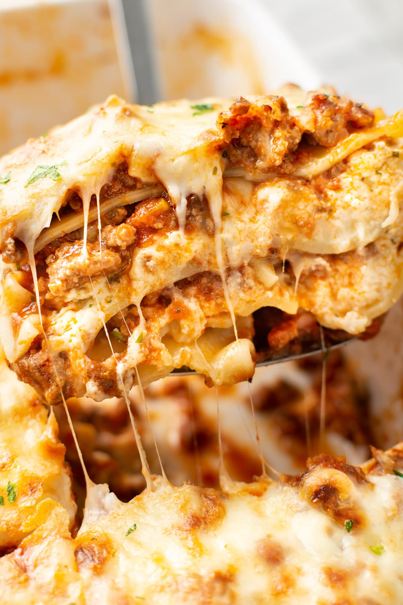

Lasagna

Description
Lasagna, famed worldwide, has ancient origins and remains an Italian superstar dish. Basically, lasagna is a baked casserole made with wide flat pasta and layered with fillings such as ragú, bechamel, vegetables and various cheeses. Unsurprisingly, every Italian region has its own traditional recipe.
Ingredients
- Oven-ready lasagna noodles
- Homemade or store-bought red sauce
- Ground sausage or beef, browned and drained of grease
- Parmesan cheese
Directions
- Preheat oven to 350 degrees.
- Lightly grease your baking dish.
- Ladle a small amount of sauce onto the bottom of the pan.
- Lay your lasagna noodles flat across the sauce in a single layer.
- Ladle more sauce onto the noodles.
- Sprinkle a thin layer of sausage or beef, then sprinkle the parmesan cheese on top.
- Repeat steps 4-6 until your dish is completely filled. Make sure the last layer is cheese.
- Cover with foil, then bake for 40-50 minutes. In the last 5 minutes, remove the foil to let the cheese brown slightly.
- Let stand for 10 minutes, then serve.